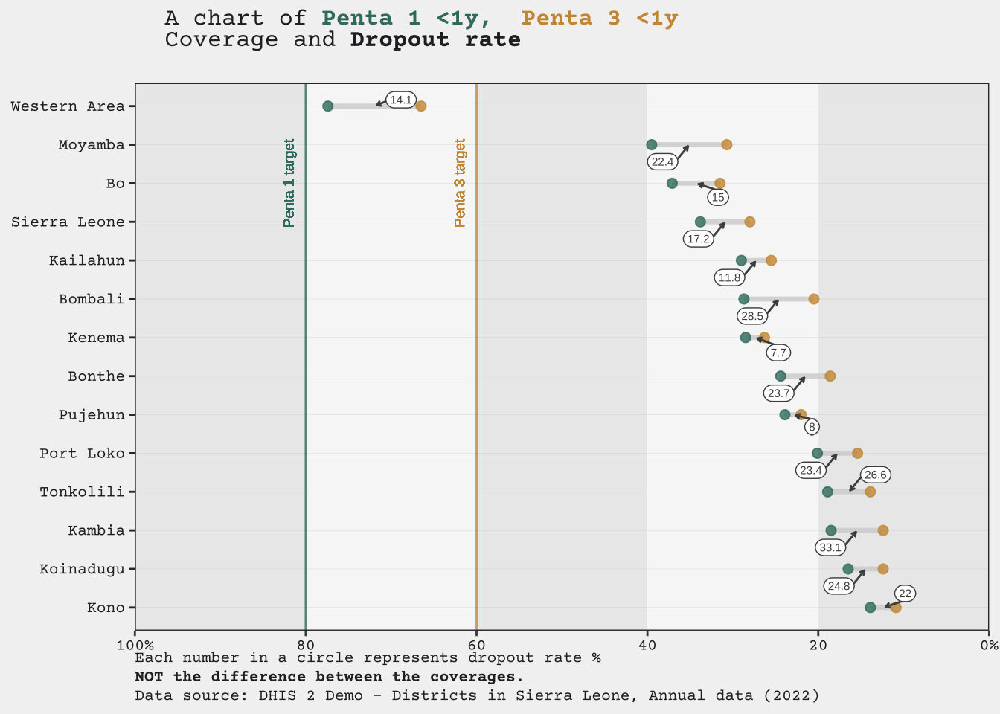
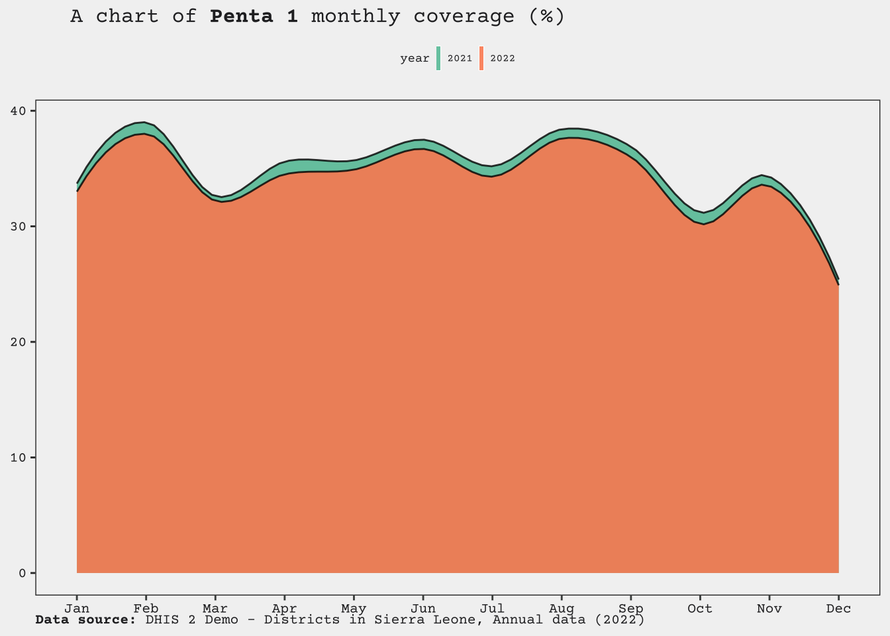

dhis2-play
Quarto
# A tibble: 1,332 × 3
name id level
<chr> <chr> <int>
1 Adonkia CHP Rp268JB6Ne4 4
2 Afro Arab Clinic cDw53Ej8rju 4
3 Agape CHP GvFqTavdpGE 4
4 Ahamadyya Mission Cl plnHVbJR6p4 4
5 Ahmadiyya Muslim Hospital BV4IomHvri4 4
6 Air Port Centre, Lungi qjboFI0irVu 4
7 Alkalia CHP dWOAzMcK2Wt 4
8 Allen Town Health Post kbGqmM6ZWWV 4
9 Approved School CHP eoYV2p74eVz 4
10 Arab Clinic nq7F0t1Pz6t 4
# … with 1,322 more rows [1] "O6uvpzGd5pu" "fdc6uOvgoji" "lc3eMKXaEfw" "jUb8gELQApl" "PMa2VCrupOd"
[6] "kJq2mPyFEHo" "qhqAxPSTUXp" "Vth0fbpFcsO" "jmIPBj66vD6" "TEQlaapDQoK"
[11] "bL4ooGhyHRQ" "ImspTQPwCqd" "eIQbndfxQMb" "at6UHUQatSo"Accross different districts
# A tibble: 42 × 4
analytic org_unit period value
<fct> <fct> <chr> <dbl>
1 Penta 1 Coverage <1y Bo 2022 37.1
2 Penta 1 Coverage <1y Bombali 2022 28.7
3 Penta 1 Coverage <1y Bonthe 2022 24.4
4 Penta 1 Coverage <1y Kailahun 2022 29
5 Penta 1 Coverage <1y Kambia 2022 18.5
6 Penta 1 Coverage <1y Kenema 2022 28.5
7 Penta 1 Coverage <1y Koinadugu 2022 16.5
8 Penta 1 Coverage <1y Kono 2022 13.9
9 Penta 1 Coverage <1y Moyamba 2022 39.5
10 Penta 1 Coverage <1y Port Loko 2022 20.1
# … with 32 more rows
Accross different periods(monthly)
# A tibble: 12 × 4
analytic org_unit period value
<fct> <fct> <chr> <dbl>
1 Penta 1 Coverage <1y Sierra Leone January 2022 33
2 Penta 1 Coverage <1y Sierra Leone February 2022 38
3 Penta 1 Coverage <1y Sierra Leone March 2022 32.2
4 Penta 1 Coverage <1y Sierra Leone April 2022 34.5
5 Penta 1 Coverage <1y Sierra Leone May 2022 34.9
6 Penta 1 Coverage <1y Sierra Leone June 2022 36.7
7 Penta 1 Coverage <1y Sierra Leone July 2022 34.3
8 Penta 1 Coverage <1y Sierra Leone August 2022 37.6
9 Penta 1 Coverage <1y Sierra Leone September 2022 36
10 Penta 1 Coverage <1y Sierra Leone October 2022 30.2
11 Penta 1 Coverage <1y Sierra Leone November 2022 33.5
12 Penta 1 Coverage <1y Sierra Leone December 2022 24.9# A tibble: 12 × 4
analytic org_unit period value
<fct> <fct> <chr> <dbl>
1 Penta 1 Coverage <1y Sierra Leone January 2021 33.7
2 Penta 1 Coverage <1y Sierra Leone February 2021 39
3 Penta 1 Coverage <1y Sierra Leone March 2021 32.6
4 Penta 1 Coverage <1y Sierra Leone April 2021 35.6
5 Penta 1 Coverage <1y Sierra Leone May 2021 35.7
6 Penta 1 Coverage <1y Sierra Leone June 2021 37.5
7 Penta 1 Coverage <1y Sierra Leone July 2021 35.2
8 Penta 1 Coverage <1y Sierra Leone August 2021 38.4
9 Penta 1 Coverage <1y Sierra Leone September 2021 36.9
10 Penta 1 Coverage <1y Sierra Leone October 2021 31.2
11 Penta 1 Coverage <1y Sierra Leone November 2021 34.3
12 Penta 1 Coverage <1y Sierra Leone December 2021 25.4